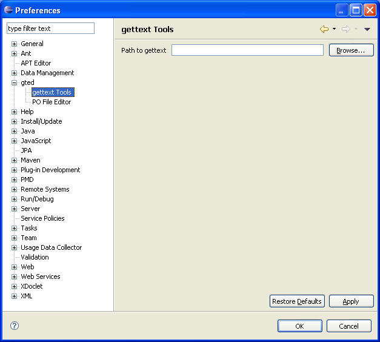
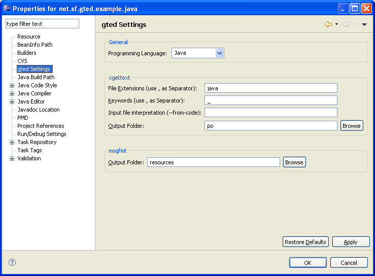

gted invokes the gettext utilites (xgettext and msgfmt).
Simply right-click on the project and select gted->Update PO to invoke xgettext and gted->Make MO for msgfmt.
If the gettext tools are not contained in the PATH you can define the location in the preferences:

Right-click on the project to get to the gted Properties:

You can find more information about the utilities and the settings in the gettext manual.
xgettext:
http://www.gnu.org/software/gettext/manual/gettext.html#xgettext-Invocation
msgfmt:
http://www.gnu.org/software/gettext/manual/gettext.html#msgfmt-Invocation